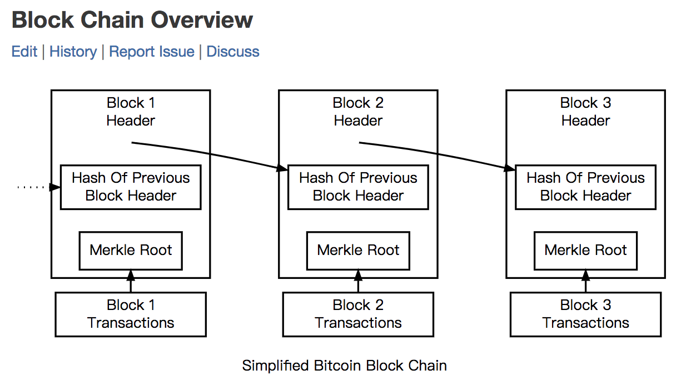
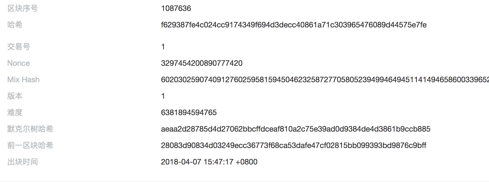
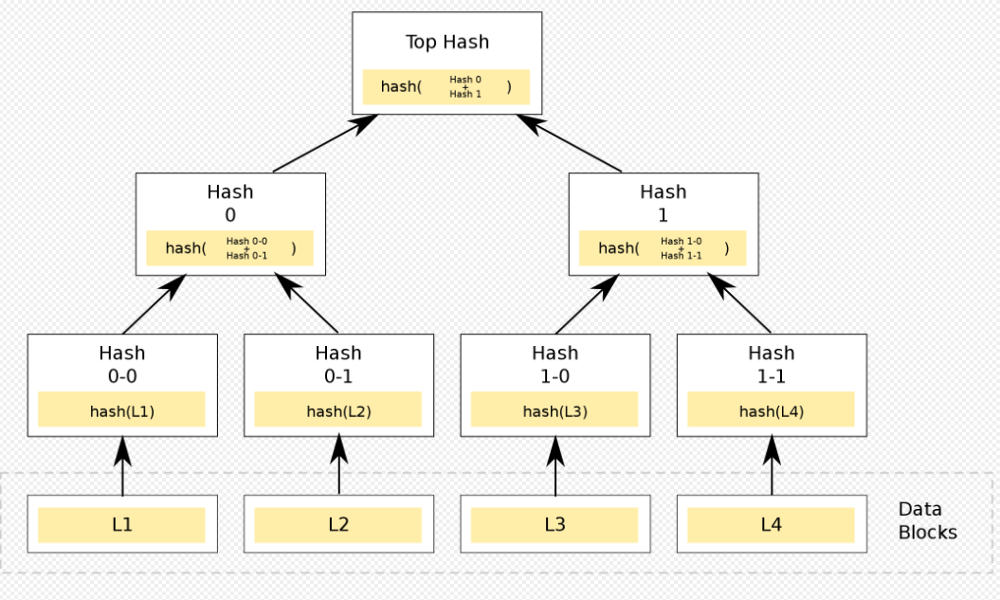
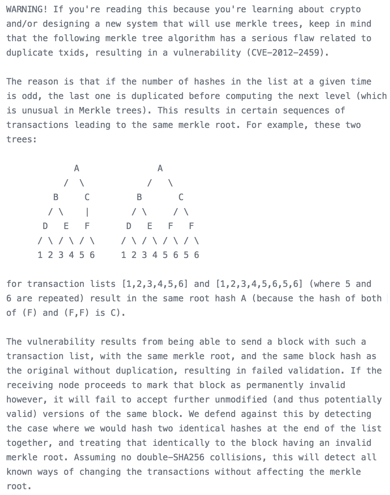
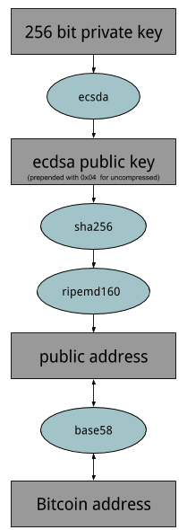

- 00 开篇词 帮你从0到1深入学习区块链技术.md.html
- 尾声篇 授人以鱼，不如授人以渔.md.html
- 新书首发《区块链第一课：深入浅出技术与应用》.md.html
- 第01讲 到底什么才是区块链？.md.html
- 第02讲 区块链到底是怎么运行的？.md.html
- 第03讲 浅说区块链共识机制.md.html
- 第04讲 区块链的应用类型.md.html
- 第05讲 如何理解数字货币？它与区块链又是什么样的关系？.md.html
- 第06讲 理解区块链之前，先上手体验一把数字货币.md.html
- 第07讲 区块链的常见误区.md.html
- 第08讲 最主流区块链项目有哪些？.md.html
- 第09讲 深入区块链技术（一）：技术基础.md.html
- 第10讲 深入区块链技术（二）：P2P网络.md.html
- 第11讲 深入区块链技术（三）：共识算法与分布式一致性算法.md.html
- 第12讲 深入区块链技术（四）：PoW共识.md.html
- 第13讲 深入区块链技术（五）：PoS共识机制.md.html
- 第14讲 深入区块链技术（六）：DPoS共识机制.md.html
- 第15讲 深入区块链技术（七）：哈希与加密算法.md.html
- 第16讲 深入区块链技术（八）： UTXO与普通账户模型.md.html
- 第17讲 去中心化与区块链交易性能.md.html
- 第18讲 智能合约与以太坊.md.html
- 第19讲 上手搭建一条自己的智能合约.md.html
- 第20讲 区块链项目详解：比特股BTS.md.html
- 第21讲 引人瞩目的区块链项目：EOS、IOTA、Cardano.md.html
- 第22讲 国内区块链项目技术一览.md.html
- 第23讲 联盟链和它的困境.md.html
- 第24讲 比特币专题（一）历史与货币.md.html
- 第25讲 比特币专题（二）：扩容之争、IFO与链上治理.md.html
- 第26讲 数字货币和数字资产.md.html
- 第27讲 弄懂数字货币交易平台（一）.md.html
- 第28讲 弄懂数字货币交易平台（二）.md.html
- 第29讲 互联网身份与区块链数字身份.md.html
- 第30讲 区块链即服务BaaS.md.html
- 第31讲 数字货币钱包服务.md.html
- 第32讲 区块链与供应链（一）.md.html
- 第33讲 区块链与供应链（二）.md.html
- 第34讲 从业区块链需要了解什么？.md.html
- 第35讲 搭建你的迷你区块链（设计篇 ）.md.html
- 第36讲 搭建你的迷你区块链（实践篇）.md.html
- 捐赠
第15讲 深入区块链技术（七）：哈希与加密算法
区块链最核心的两个技术点是共识机制和密码学，由于共识机制是公链的基础，所以这部分内容我已经在前面的内容中优先讲解了。
接下来，我来讲一讲区块链的密码学基础，有关区块链密码学你只需要了解它的基本原理和优劣即可。
另外，区块链的密码学中文资料也十分丰富，如果你感兴趣的话，可以在学有余力的基础上酌情深入。
区块链中主要应用了两类密码学算法，第一类是哈希算法，第二类是非对称加密算法。
我们先来看看哈希算法。
1.哈希算法
哈希算法是一类数学函数算法，又称散列算法，它是一种数据映射关系。
为了方便举例，我们假设 h = HASH( X | z )，你输入一个任意长的数据z，经过哈希运算后，返回给你固定长度的数据h，z叫做原像，h是哈希结果，又称作“数据指纹”，z可选的数据集合构成了X。
哈希算法具有下面的4种特性。
- 原像不可逆。原像不可逆是指对于任意给定的h，都无法依据h自身的信息推导出z。
- 难题友好性。难题友好性通俗的理解就是如果要得到难题答案，你只能暴力枚举，没有比这更好的方法。在h = HASH( X | z )中，从h无法推导出z，只能不断地计算尝试，那么z所在的数值集合构成了X，X的大小是哈希算法的安全因子之一。
- 发散性。发散性是指对于任意的z，即使我们只改动非常少的信息量，例如改动1个比特位生成z’，那么HASH(z) 与 HASH(z’) 就是两个大相径庭的结果，完全不相似。
- 抗碰撞性。抗碰撞性是指对于任意两个不相同的z，那么他们对应的h值也不同。如果对于任意的 y 不等于 z，则 HASH(y) 不等于 HASH(z)；满足上述定义哈希特性的算法，我们也称作具有严格抗碰撞性。如果我们任意给定一个z，你都无法找到另外一个z’，使得其值也等于h，满足这样的哈希特性的算法就有弱抗碰撞性。
目前流行的 Hash 算法包括了MD5、SHA-1 和 SHA-2，其中MD5被证明不具有强抗碰撞性。SHA （Secure Hash Algorithm）是一个 Hash 函数族，分为SHA-1、SHA-2、SHA-3，代表了三代哈希标准，目前使用比较多的是SHA-2系列。
第一代的SHA-1 基于 MD4设计，并且模仿了该算法，SHA-1 已被证明了不具备“强抗碰撞性”，所以安全性不够高。
为了提高安全性，第二代 SHA-2一共包含了 SHA-224、SHA-256、SHA-384，和 SHA-512 算法（统称为 SHA-2），它们跟 SHA-1 算法原理类似。SHA-3 相关算法也已被提出，它的出现并不是要取代SHA-2，因为SHA-2目前并没有出现明显的弱点。
由于对MD5、和SHA-1出现成功的破解，我们需要一个不同与之前算法，可替换的加密散列算法，也就是现在的 SHA-3。
1.1 区块链上的哈希算法
哈希算法被广泛地使用在构造和验证区块、交易的完整性上，由于哈希算法的四个特性，使得我们可以把任意的交易数据做成数据摘要，然后再一个一个链接起来，形成数据块的链式结构。
这样我们可以通过验证每个区块间接地验证交易，然后每个交易原数据也可以做成哈希数据摘要，用于验证交易数据的完整性。
我们借用比特币开发者文档中的图，这个图表达了区块链的基本数据结构，

在图中可以看出，当前区块里面包含上一个区块的哈希，形成一个哈希指针链表，由于哈希的发散性，所以这个链表也有极大的发散性。
我们可以用代码模拟一遍，我们先列表构造5个简化的区块，其中第一个块是创世区块，我们规定它指向的前向区块的哈希全为零；
后面第2个块，第3个块中content分别记录了两笔交易，这里为了方便理解，我使用了文字表述交易的内容，实际上，区块链上的交易是二进制格式化的数据，而不是文本数据。代码中并没有填充哈希，是在运行时填充的。
#!/usr/bin/env python
import hashlib
def main():
# example:
block_headers = [
{"prev_block_hash":"0000000000000000000000000000000000000000000000000000000000000000", "content":"genesis block:A pay C 12.3 BTC"},
{"prev_block_hash":"to_be_hashed", "content":"2nd block:C pay B 2.0 BTC"},
{"prev_block_hash":"to_be_hashed", "content":"3th block:transactions..."},
{"prev_block_hash":"to_be_hashed", "content":"4th block:transactions...j"},
{"prev_block_hash":"to_be_hashed", "content":"5th block:transactions..."}
]
# hash prev block header
index = 0
for header in block_headers:
# genesis block, ignore
if index == 0:
print header
index = index + 1
continue
# generate hash chain
prev_block_header = block_headers[index - 1]
target_buffer = prev_block_header["content"] + prev_block_header["prev_block_hash"]
header["prev_block_hash"] = hashlib.sha256(target_buffer).hexdigest()
print header
index = index + 1
if __name__ == '__main__':
main()
我们可以直接得到结果，这是一个典型的哈希指针链表，每一个区块的prev_block_hash域指向上一个区块哈希。
{'content': 'genesis block:A pay C 12.3 BTC', 'prev_block_hash': '0000000000000000000000000000000000000000000000000000000000000000'}
{'content': '2nd block:C pay B 2.1 BTC', 'prev_block_hash': '01279c1208a8eca3d4a47a123119b04f1dcc592c818aace2715b2c418b38822a'}
{'content': '3th block:transactions...', 'prev_block_hash': '6d96c220b22371dc1d2b3549da42bd3ea2191f07f18112bf195bc6675bbc6b97'}
{'content': '4th block:transactions...j', 'prev_block_hash': '9e41c61fa151320145a56a38e85c01b8c025729614f4c10596d99068ea0b3395'}
{'content': '5th block:transactions...', 'prev_block_hash': '34f002b445a38fa7402e590629e76943060ffc4de96b1b9bc6b0f564e5a7bc72'}
如果我们将第二块中的content从”C pay B 2.1 BTC” 修改为 “C pay B 2.0 BTC”，那么我们将得到如下结果，我们可以发现从第三个块往后所有的块指向的前一个区块的哈希都不再与上面的一致。
{'content': 'genesis block:A pay C 12.3 BTC', 'prev_block_hash': '0000000000000000000000000000000000000000000000000000000000000000'}
{'content': '2nd block:C pay B 2.0 BTC', 'prev_block_hash': '01279c1208a8eca3d4a47a123119b04f1dcc592c818aace2715b2c418b38822a'}
{'content': '3th block:transactions...', 'prev_block_hash': 'f91faad6b874fb97a20ad9cbc57ef1302a431a2cce4ac5efe28a64b353526849'}
{'content': '4th block:transactions...j', 'prev_block_hash': '99d17dfe9a9fab68cffd6a82bc3786fe3c2d3165f1fba30b3f2ffc418c97fc8b'}
{'content': '5th block:transactions...', 'prev_block_hash': 'd2f42291ef0811e5babc1d38ca8019ee457f84b323a3d549a04b6a4535357d7f'}
以上我们构造了一个极简的区块链的基本结构，区块头描述了一个区块的基本信息，在实际应用中，里面通常包含了下面的几个内容。

图中有当前区块高度、本区块的哈希、前一区块哈希、nonce值等等。
所以前一区块哈希是一个区块头必备的数据域，这种链式结构具备发散传导性，越往历史以前的篡改，越容易导致大面积的影响，这也叫做历史逆向修改困难。
在PoW共识机制的情况下，这种逆向修改的难度会随着当前全网算力线性增长。
1.2 默克尔树（Merkle tree）
哈希算法的一个重要应用是默克尔树（Merkle tree），默克尔树是一种数据结构，通常是一个二叉树，也有可能是多叉树，它以特定的方式逐层向上计算，直到顶部，最顶层叫做默克尔根，默克尔树最为常见和最简单的是二叉默克尔树。
默克尔树的基本结构如下图。
 （图片来自维基百科）
比特币和以太坊都使用了默克尔树这种数据结构，只不过里面存放的数据都是哈希。我们在比特币的核心版本源码中可以发现注释中有介绍。

（图片来自比特币Core源码）
以太坊中针对比特币的设计做了改进，叫做默克尔帕特里夏树(Merkle Patricia tree），相对于比特币在块头中只有一棵树，以太坊有三棵树。
区块链的挖矿算法也应用了哈希算法，挖矿算法利用的是其难题友好性，我们在PoW共识机制中讲解过，这里不再赘述。
2.非对称加密算法
非对称加密算法是相对于对称算法而言的，这两者组成了密码学的核心内容。
这两者的使用区别体现在密钥是否可以公开，对称密钥要求加解密过程均使用相同的密钥，而非对称加密可以提供一对钥匙，私钥自己保管，公钥可以公开。
常见的对称加密算法有 DES、3DES、AES、IDEA， 常见的非对称加密算法有RSA、ECC等。
在比特币等众多数字货币的项目中，在账户层面主要使用的是非对称加密算法。
在对称加密算法里，由于双方需要提前共享密钥，在使用过程中有诸多不便，非对称算法的出现解决了这一难题。
在非对称算法中，私钥一般是通过一个随机数产生的，这个随机数我们也叫做种子，从这个角度来说，知道了这个随机数也就等于知道了私钥，不过私钥的产生范围非常大，在比特币中是2的256次方，差不多在10的70方数量级上。
如果你产生随机数的算法足够均匀分布，私钥碰撞的可能性比中了1亿大奖同时被雷劈中的概率还要小数亿倍。所以区块链对产生随机数的算法要求比较高，它要求真实的均匀随机分布，而不是计算机伪随机数。
如果我们有了私钥，接下来就如图所示：

我们从私钥到公钥，是由非对称加密算法保证的，这种算法在比特币中选择的是ECDSA算法，ECDSA算法中选择的椭圆曲线名为secp256k1。
而从公钥到地址，是由哈希算法保证的，在这一步使用了SHA256和RIPEMD160。椭圆曲线加密算法ECC利用了“寻找离散对数”的难解性提供了单向不可逆性，具体原理你可以找资料了解一下。
在区块链上，一个比特币交易的产生由两部分组成，第一部分是签名加锁，对应到的是交易的输出、第二部分是解锁花费，对应到的是交易的输入，当我们构造一笔交易的时候必然会用到私钥，这是所有数字货币资产控制权由私钥保证的根本原因。具体逻辑我们留到下篇讲解UTXO的时候讨论。
最后来谈谈量子威胁的内容。我在讨论比特币等众多数字货币项目的时候，很多人会问我如何看待量子计算的威胁问题，大家认为量子计算的强大计算力威胁到了哈希的抗碰撞性。其实这不是一个设计缺陷，而是一个发展问题，是可以在区块链的发展过程中解决的。
我对于量子计算的威胁论有以下的看法。
- 即使出现了量子计算攻破非对称加密算法的问题，那么首先要看是什么算法，例如是RSA，还是ECC。
- 其次要看攻击成本是否足够低，因为理论上的可行性并不代表工程可行性，这是两码事。例如持续攻击比特币要花费1亿美金，持续攻击时间超过20年才能生效，那么这笔买卖很明显不划算。
- 量子计算威胁的对象不止加密货币，而是整个密码学体系，如果发生破解事件，很可能是银行、互联网后端系统，目前整个互联网应用都基于HTTPS，如果HTTPS被破解，在量子计算面前传统的账号密码几乎不可用。
- 量子计算目前发展虽然看起来喜人，但是离实际应用还很远，很多计算其实并非是通用计算，而是专用计算，也就是说一个量子计算机写入的算法只能解决一个特定问题，而且还是概率解，可用性易用性还需要较长时间转化。
总结
今天我向你介绍了哈希算法，讲解了区块链哪些地方使用了哈希算法，并介绍了非对称加密算法，最后还谈了一下我对量子计算威胁论的看法。
密码学是所有区块链的基础，可以说如果没有密码学的支撑，区块链将会退化成普通的分布式日志系统。
那么亲爱的读者，比特币地址有哪些类型呢？以太坊的地址又是如何生成的呢？你可以给我留言，我们一起讨论。感谢你的收听，我们下次再见。
参考阅读：
- 《区块链技术指南》
- 《精通比特币》
- https://yeasy.gitbooks.io/blockchain_guide/content/crypto/
© 2019 - 2023 Liangliang Lee. Powered by gin and hexo-theme-book.